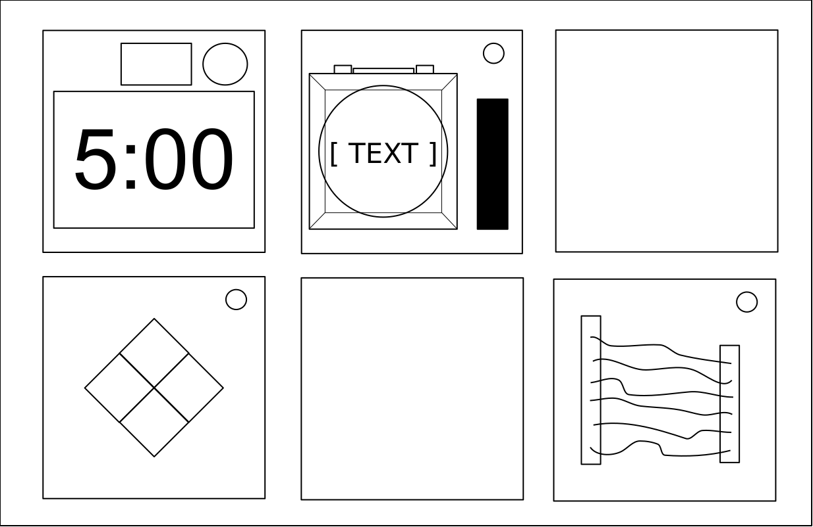
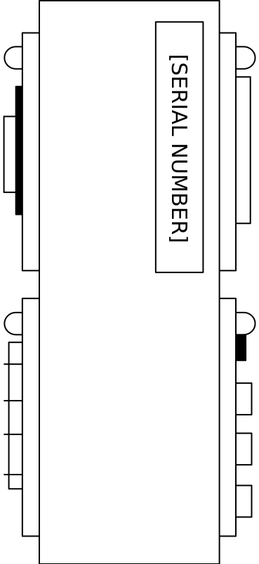

BOMB DEFUSAL MANUAL
Operation Greenhorn Ed.
Version 1.0
Verification Code: 241
Video game companion manual. Find out more at www.keeptalkinggame.com
BOMB DEFUSAL MANUAL
Operation Greenhorn Ed.
Version 1.0
Verification Code: 241
Video game companion manual. Find out more at www.keeptalkinggame.com
Welcome to the even more dangerous and challenging world of modded
Keep Talking.
To reiterate: you are the expert. In these pages you will find everything you need to know to defuse bombs in the Operation Greenhorn mission pack.
As always — One small oversight and it could all be over!
Quick Module Reference
4-5
Defusing Bombs
6
Wires
8
The Button
9
Keypad
10
Simon Says
11
Who’s On First
12-13
Memory
14
Emoji Math
15
The Bulb
16-17
Colored Squares
18
Morse Code
19
Piano Keys
20-21
Complicated Wires
22
Wire Sequence
23
Connection Check
24-25
Colour Flash
26-27
Switches
28
Blind Alley
29
Crazy Talk
30-31
Word Search
32
Password
33
Wire Placement
34
Maze
35
Shape Shift
36
Venting Gas
38
Capacitor Discharge
39
Random Number Generator
40
Knob
41
Shape Memory
42
A: Indicator
44
B: Battery
45
C: Ports
46
X: Serial Number
47
These pages contain diagrams of all module’s appearances for quick referencing. (The diagrams are also seen at the top right of every manual’s first page.)
Wires
(pg8)

The Button
(pg9)
Keypad
(pg10)

Simon Says
(pg11)

Who’s on First
(pg12-13)

Memory
(pg14)

Emoji Math
(pg15)

The Bulb
(pg16-17)

Colored Squares
(pg18)

Morse Code
(pg19)

Piano Keys
(pg20-21)

Complicated Wires
(pg22)

Wire Sequence
(pg23)

Connection Check
(pg24-25)

Colour Flash
(pg26-27)
Switches
(pg28)
Continued on the next page...
Section 1 (cont)
Blind Alley
(pg29)

Crazy Talk
(pg30-31)

Word Search
(pg32)
Password
(pg33)

Wire Placement
(pg34)
Maze
(pg35)

Shape Shift
(pg36)

Venting Gas
(pg38)

Capacitor Discharge
(pg39)

Random Number Generator
(pg40)
Knob
(pg41)

Shape Memory
(pg42)
A bomb will explode when its countdown timer reaches 0:00 or when too many strikes have been recorded. The only way to defuse a bomb is to disarm all of its modules before its countdown timer expires.
Example Bomb
|

Front |

Side |
Each bomb includes a set of modules that must be disarmed. Each module is discrete and can usually be disarmed in any order.
Instructions for disarming modules can be found in Section 1. “Needy” modules are a special category of modules and are described in Section 2.
When the Defuser makes a mistake, the bomb records a strike which is displayed on the indicator above the countdown timer. Bombs with a strike indicator typically explode upon the third strike. The timer will begin to count down faster for each new strike recorded.
But if no strike indicator is present above the countdown timer, the bomb explodes after the first strike, leaving no room for error.
Strike Indicator

Some disarming instructions require specific information about the bomb, called ‘edgework’. Edgework can typically be found on the top, bottom, or sides of the bomb casing, like the Serial Number. See Appendix A, B, C, and X for identification instructions that are useful in disarming certain modules.
Also known as ‘Solvable modules’ or just ‘Solvables’.
Solvable modules can typically be identified by a status light in the top right corner. When a module is disarmed, this light is lit green.
All solvable modules must be disarmed to defuse the bomb.
Often shortened to just ‘Needies’.
Needy modules can usually be identified as a module with a small 2‑digit timer in the top center. They activate automatically after some time has passed, but disarming a module may cause them to activate regardless.
Once activated, needy modules sound an alarm. They must be dealt with before their timer expires to prevent a strike.
Needy modules cannot be completely disarmed. Stay alert, because they may reactivate at any time...

The following pages are reference pages for key information required for multiple modules, such as edgework.
Edgework is always found on the sides of the bomb’s casing.